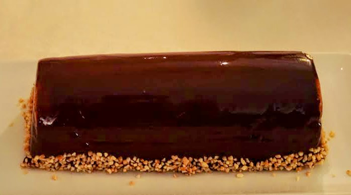

Glaçage miroir
⏱️ Préparation : 10 min
🔥 Cuisson : 10 min
🌡️ Utilisation à 30°C



Étapes
- Faites tremper la gélatine dans un grand volume d'eau froide pendant environ 10 minutes.
- Versez l'eau et le sucre dans une casserole puis portez à ébullition.
- Ajoutez le cacao amer tamisé et mélangez soigneusement au fouet afin d'éliminer les grumeaux.
- Ajoutez ensuite la crème liquide et mélangez jusqu'à obtenir une préparation homogène.
- Portez à légère ébullition tout en remuant régulièrement.
- Retirez du feu puis incorporez la gélatine bien essorée.
- Mélangez jusqu'à complète dissolution de la gélatine.
- Passez le glaçage au chinois pour obtenir un résultat parfaitement lisse.
- Laissez refroidir jusqu'à 30°C.
- Versez le glaçage sur l'entremets ou la bûche parfaitement congelé(e) en une seule fois.
- Laissez s'écouler l'excédent avant de déposer le dessert sur son plat de service.
Conseil
Ce glaçage miroir est particulièrement adapté à l'entremets trois chocolats et à sa version bûche. Pour obtenir une finition parfaitement brillante, appliquez-le lorsque sa température atteint précisément 30°C sur un dessert bien congelé.